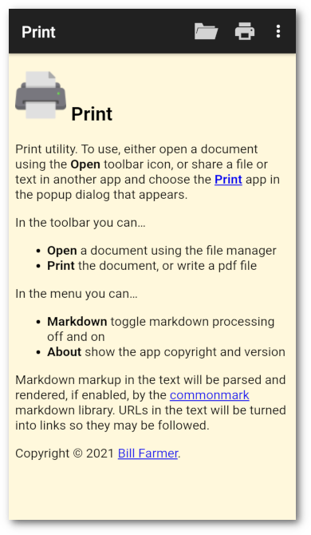
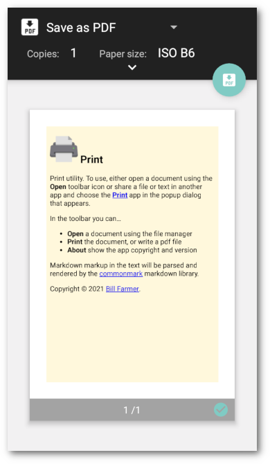

Introduction
Print is an android print utility.
 
Using
To use, either open a document using the Open toolbar icon, or share a file or text in another app and choose the Print app in the popup dialog that appears.
Toolbar
In the toolbar you can…
- Open a document with the file manager
- Print the document, or write a pdf file
In the menu you can…
- Markdown toggle markdown processing off and on
- About show the app copyright and version
Keyboard Shortcuts
Keyboard shortcuts are supported on an external keyboard…
- Ctrl+O – Open
- Ctrl+P – Print
Markdown
Markdown markup in the text will be parsed and rendered, if enabled, by the commonmark markdown library. URLs in the text will be turned into links so they may be followed.